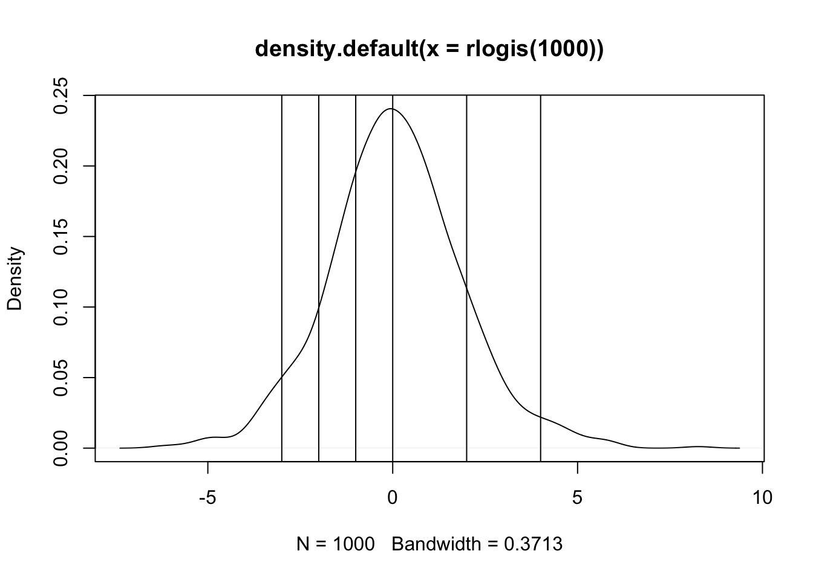

```{r}
library(MASS); library(foreign)
Li.Data <- read.dta("./data/li-replication.dta")
table(Li.Data$generosityg)
Li.Data$generositygF <- as.factor(Li.Data$generosityg)
```
0 1 2 3 4 5 6
13 10 19 7 2 1 1 The slides are here.
Our fourth class meeting will focus on Chapter 6 and Chapter 7 of Handbook of Regression Modeling in People Analytics. The video will be on youtube.
With qualitative outcomes that are nominal (Chapter 6) or ordered (Chapter 7); linear regressions and/or binary GLMs are insufficiently flexible and/or rich to confront the problem. In the nominal case, how one chose to turn the categories to values is unknown and, in the ordered case, the idea that unit distance separates the categories is an arbitrary assumption that is unlikely to be true.
My preferred method of thinking about ordered regression involves latent variables. So what is a latent variable? It is something that is unobservable, hence latent, and we only observe coarse realizations in the form of qualitative categories. Consider the example from Li in the Journal of Politics.

The outcome is summed from six individual types of incentives. They are explained here.

and

There are two parts to the data description for the inputs.

and 
and there is a further description of other variables that are deployed.

and

This should give us an idea of what is going on. The data come in Stata format; we can read these via the foreign or haven libraries in R.
```{r}
library(MASS); library(foreign)
Li.Data <- read.dta("./data/li-replication.dta")
table(Li.Data$generosityg)
Li.Data$generositygF <- as.factor(Li.Data$generosityg)
```
0 1 2 3 4 5 6
13 10 19 7 2 1 1 It is worthwhile to notice that the top of the scale is rather sparse.
There is also a concern about FDI and economies of scale. The following is a plot of the relationship between FDI and size of the economy in the sample.

Without careful attention to normalization, China is a clear x-y outlier.
Suppose there is some unobserved continuous variable, call it \(y^{*}\) that measures the willingness/utility to be derived from tax incentives to FDI. Unfortunately, this latent quantity is unobservable; we instead observe how many incentives are offered and posit that the number of incentives is a manifestation of increasing utility with unknown points of separation – cutpoints – that separate these latent utilities into a mutually exclusive and exhaustive partition. In a simplified example, consider this.
```{r}
plot(density(rlogis(1000)))
abline(v=c(-3,-2,-1,0,2,4))
```
So anything below -3 is zero incentives; anything between -3 and -2 is one incentive, … , and anything above 4 should be all six incentives. What we have is a regression problem but the outcome is unobserved and takes the form of a logistic random variable. Indeed, one could write the equation as:
\[y^{*} = X\beta + \epsilon\]
where \(\epsilon\) is assumed to have a logistic distribution but this is otherwise just a linear regression. Indeed, the direct interpretation of the slopes is the effect of a one-unit change in X on that logistic random variable.
The table of estimates is presented in the paper; I will copy it here.

I will choose two of a few models estimated in the paper. First, let us have a look at Model 1.
```{r}
li.mod1 <- polr(generositygF ~ law00log + transition, data=Li.Data)
summary(li.mod1)
```
Re-fitting to get HessianCall:
polr(formula = generositygF ~ law00log + transition, data = Li.Data)
Coefficients:
Value Std. Error t value
law00log -0.6192 0.4756 -1.3019
transition -0.5161 0.7126 -0.7243
Intercepts:
Value Std. Error t value
0|1 -1.3617 0.3768 -3.6144
1|2 -0.4888 0.3323 -1.4707
2|3 1.1785 0.3668 3.2133
3|4 2.3771 0.5361 4.4339
4|5 3.1160 0.7325 4.2541
5|6 3.8252 1.0183 3.7565
Residual Deviance: 164.3701
AIC: 180.3701 We can read these by stars. There is nothing that is clearly different from zero as a slope or 1 as an odds-ratio. The authors deploy a common strategy for adjusting standard errors that, in this case, is necessary to find a relationship with statistical confidence. That’s a diversion. To the story. In general, the sign of the rule of law indicator is negative, so as rule of law increases, incentives decrease though we cannot rule out no effect. Transitions also have a negative sign; regime changes have no clear influence on incentives. There is additional information that is commonly given short-shrift. What do the cutpoints separating the categories imply? Let’s think this through recongizing that the estimates have an underlying t/normal distribution. 4|5 is within one standard error of both 3|4 and 5|6. The model cannot really tell these values apart. Things do improve in the lower part of the scale but we should note that this is where the vast majority of the data are actually observed.
Next, I will turn the estimates into odds-ratios by exponentiating the estimates.
```{r}
exp(li.mod1$coefficients)
``` law00log transition
0.5384016 0.5968309 For Kawika, this is one of the many cases that I am familiar with where robust is necessary to find something. Note neither effect can be differentiated from zero with much confidence at all. To further examine the claims, I will also replicate the right-most column.
```{r}
li.mod4 <- polr(generositygF ~ law00log + transition + fdiinf + democfdi + democ + autocfdi2 + autocfdir + reggengl + reggengl2 + gdppclog + gdplog, data=Li.Data)
summary(li.mod4)
```
Re-fitting to get HessianCall:
polr(formula = generositygF ~ law00log + transition + fdiinf +
democfdi + democ + autocfdi2 + autocfdir + reggengl + reggengl2 +
gdppclog + gdplog, data = Li.Data)
Coefficients:
Value Std. Error t value
law00log -0.89148 0.66806 -1.3344
transition -0.57123 0.94945 -0.6016
fdiinf 0.37605 0.18055 2.0828
democfdi -0.39969 0.18228 -2.1927
democ -1.23307 0.77661 -1.5878
autocfdi2 1.24932 1.94198 0.6433
autocfdir -3.17796 1.95351 -1.6268
reggengl 1.81476 0.44754 4.0550
reggengl2 -0.05777 0.01444 -4.0007
gdppclog 0.20891 0.43867 0.4762
gdplog 0.15754 0.18138 0.8686
Intercepts:
Value Std. Error t value
0|1 13.7773 0.1020 135.0542
1|2 14.7314 0.3048 48.3349
2|3 16.9740 0.5230 32.4561
3|4 18.7911 0.8027 23.4107
4|5 20.0387 1.1590 17.2900
5|6 23.2947 4.7216 4.9336
Residual Deviance: 134.2212
AIC: 168.2212
(2 observations deleted due to missingness)Measured via odds-ratios, we can obtain those:
```{r}
exp(li.mod4$coefficients)
``` law00log transition fdiinf democfdi democ autocfdi2 autocfdir
0.41004648 0.56483013 1.45651991 0.67052543 0.29139805 3.48796970 0.04167039
reggengl reggengl2 gdppclog gdplog
6.13958891 0.94386864 1.23232943 1.17063051 Goodness of Fit:
```{r}
DescTools::PseudoR2(
li.mod1,
which = c("McFadden", "CoxSnell", "Nagelkerke", "AIC")
)
DescTools::PseudoR2(
li.mod4,
which = c("McFadden", "CoxSnell", "Nagelkerke", "AIC")
)
``` McFadden CoxSnell Nagelkerke AIC
0.01104919 0.03405653 0.03560378 180.37009764
McFadden CoxSnell Nagelkerke AIC
0.1649728 0.4054507 0.4235700 168.2212440 The last model is clearly better than the first by any of these measures. That said, there are a lot of additional predictors that add much complexity to the model and the difference in AIC is not very large.
What about the others?
```{r}
# lipsitz test
# generalhoslem::lipsitz.test(li.mod1)
# generalhoslem::lipsitz.test(li.mod4)
```They fail to work because of sparseness.
The text cites a test that owes to Brant on examining proportionality. It turns out that I know a bit about this; I published a purely theoretical stats paper showing that it is not at all clear what the alternative hypothesis embodied in this test actually means because the only model with a proper probability distribution for \(y^{*}\) is this proportional-odds model.
I will follow the text with this caveat in mind:
```{r}
brant::brant(li.mod1)
```--------------------------------------------
Test for X2 df probability
--------------------------------------------
Omnibus 13.51 10 0.2
law00log 8.64 5 0.12
transition 4.28 5 0.51
--------------------------------------------
H0: Parallel Regression Assumption holds```{r}
Mat.Fit <- data.frame(fitted(li.mod4))
library(tidyverse)
```── Attaching packages ─────────────────────────────────────── tidyverse 1.3.2 ──
✔ ggplot2 3.3.6 ✔ purrr 0.3.4
✔ tibble 3.1.8 ✔ dplyr 1.0.9
✔ tidyr 1.2.0 ✔ stringr 1.4.1
✔ readr 2.1.2 ✔ forcats 0.5.2
── Conflicts ────────────────────────────────────────── tidyverse_conflicts() ──
✖ dplyr::filter() masks stats::filter()
✖ dplyr::lag() masks stats::lag()
✖ dplyr::select() masks MASS::select()```{r}
Mat.Fit$pred.val <- rep(-999, 51)
Mat.Fit$pred.val[Mat.Fit$X0 > Mat.Fit$X1 & Mat.Fit$X0 > Mat.Fit$X2 & Mat.Fit$X0 > Mat.Fit$X3 & Mat.Fit$X0 > Mat.Fit$X4 & Mat.Fit$X0 > Mat.Fit$X5 & Mat.Fit$X0 > Mat.Fit$X6] <- 0
Mat.Fit$pred.val[Mat.Fit$X1 > Mat.Fit$X0 & Mat.Fit$X1 > Mat.Fit$X2 & Mat.Fit$X1 > Mat.Fit$X3 & Mat.Fit$X1 > Mat.Fit$X4 & Mat.Fit$X1 > Mat.Fit$X5 & Mat.Fit$X1 > Mat.Fit$X6] <- 1
Mat.Fit$pred.val[Mat.Fit$X2 > Mat.Fit$X0 & Mat.Fit$X2 > Mat.Fit$X1 & Mat.Fit$X2 > Mat.Fit$X3 & Mat.Fit$X2 > Mat.Fit$X4 & Mat.Fit$X2 > Mat.Fit$X5 & Mat.Fit$X2 > Mat.Fit$X6] <- 2
Mat.Fit$pred.val[Mat.Fit$X3 > Mat.Fit$X0 & Mat.Fit$X3 > Mat.Fit$X1 & Mat.Fit$X3 > Mat.Fit$X2 & Mat.Fit$X3 > Mat.Fit$X4 & Mat.Fit$X3 > Mat.Fit$X5 & Mat.Fit$X3 > Mat.Fit$X6] <- 3
Mat.Fit$pred.val[Mat.Fit$X5 > Mat.Fit$X0 & Mat.Fit$X5 > Mat.Fit$X1 & Mat.Fit$X5 > Mat.Fit$X2 & Mat.Fit$X5 > Mat.Fit$X3 & Mat.Fit$X5 > Mat.Fit$X4 & Mat.Fit$X5 > Mat.Fit$X6] <- 5
Mat.Fit$pred.val[Mat.Fit$X6 > Mat.Fit$X0 & Mat.Fit$X6 > Mat.Fit$X1 & Mat.Fit$X6 > Mat.Fit$X2 & Mat.Fit$X6 > Mat.Fit$X3 & Mat.Fit$X6 > Mat.Fit$X4 & Mat.Fit$X6 > Mat.Fit$X5] <- 6
Pred.Data <- Li.Data[c(1:28,30:41,43:53),]
table(Pred.Data$generosityg,Mat.Fit$pred.val)
```
0 2 3 6
0 6 7 0 0
1 5 4 0 0
2 5 12 1 0
3 1 2 4 0
4 0 1 1 0
5 0 1 0 0
6 0 0 0 1So 6+12+4+1 or 23 of 51 are correctly predicted with a rather big and complicated model.
The AIC [and BIC] are built around the idea of likelihood presented last time. The formal definition, which is correct on Wikipedia explains the following: